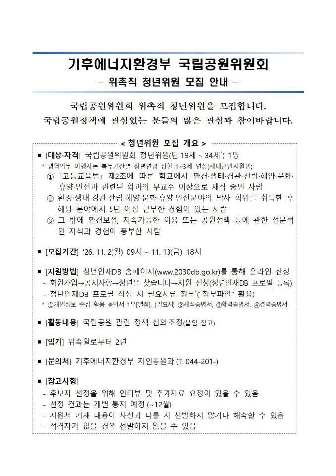

1, 2, 3중 하나만 충족하면 된다고 함

1, 2, 3중 하나만 충족하면 된다고 함
1,2번은 문서가 너무 비어보여서 적은듯
숨어있는 은둔고수 있으면 채용할려고그런거아님?
뭐 기후환경운동하고 책쓰고하면 받아주는거지
아는사람 뽑겠다는데 어쩔?
박사+5년 경력이면 군대 빼더라도 석박통합 5년만에 따도 딱 만 34세쯤에 걸치지 않나..
갓 박사 만 34도 수두룩한데
ㄹㅇ 내가 만 33인데 올해 받았음.. 사회과학이라 늦은편도 아닌데 저건 쉽지 않을듯 ㅋㅋ 저 조건 충족하는 사람이 저기에 많이 지원할것같지도 않고
임금관련내용은 없넹
저런 위원은 비상임직 아닌가? 임금은 없고 뭐 할때 교통비만 받는정도
비상근은 회의때 수당이나 한 돈 10 만원 나올걸 애초에 돈보고 하는일은 아니라
1,2가 만 34세로 가능하냐고
여자는 가능하지
글에 제대군인은 1~3세 늘린다고 적혀있어...
그냥 시팔 안뽑는다해라
19세~34세 사이 청년을 모으는데 관련학과 부교수 이상+5년이상 근무 경험ㅋㅋㅋㅋㅋ
국립공원정책에 관심있는 저 나이대의 사람이 있으려나
1,2번에 해당하는 내정자가 있나부지뭐. 3번은 그냥 걸쳐놓은거고. 점수평가는 1,2번에서 갈릴거고.
이미.내정 되어있는 사람 있는거 아니냐
청?년
내정자겟지뭐
86세대 젊은 시절엔 20대 교수도 흔했댜
2번은 은근 해당사항 많을듯.
내정자
ㅋㅋㅋㅋㅋㅋㅋㅋㅋㅋ부교수나 박사학위 후 5년경력 하려면 20대에 박사를 따야함
1,2번이 만 34세 이내에 가능함??
지구환경쪽은 대학원이 쳐주는곳이 서울대, 부산대 밖에 없는데
아마 서울대출신 내정자가 있을듯 너무 구체적이야
어차피 여자 뽑을껄
ㄴㄴ 이 정도면 여자도 없음
뽑으려고 하는 사람이 정해져있는데
공공기관에서 대놓고 직접 뽑지는 못하니까
그 사람 밖에 못 맞추는 조건으로 공고를 낸 거임
그냥 내정자 있다고 해...
1,2는 대학 환경 계열 학과마다 나이 아슬아슬하게 한두명 있으니 그렇다 쳐도 3번은 너무 노골적인데 ㅋㅋㅋ
저게 청년위원 할당제땜에 저난리난걸껄... 여성 절반 ÷ 청년 30퍼인가..... 전문성 있는 심의를 해야하는 위원회에도 기계적 할당때린 결과임....
내정자네
어차피 지들 꼴리는놈 뽑아놈
3번으로 환경팔이 내정자가 있나본데
3번 저거 비건 시위하던거 경력으로 세워서 들어가는 년이 있는 건 아니겠지.....
애초에 돈 보고 하는거 아니고, 대학마다 다르긴 한데 저런 정부기관 위원으로 들어가면 연구실적 대체하거나 평가에 반영하는 경우가 많아서 조건에 맞는 교수들은 꽤 수요가 있음. 그리고 뭐 경력도 추가하고 관련 분야 공무원들 알아놓으면 나중에 정부 용역따는데도 유리하면 유리했지 손해될건 없음
1,2에 비해 3번은 너무 차이나는거아녀
근데 1,2는 저 나이대로 달성가능하긴한거임?